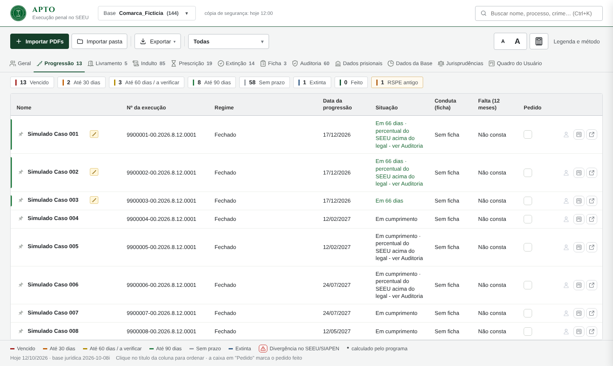
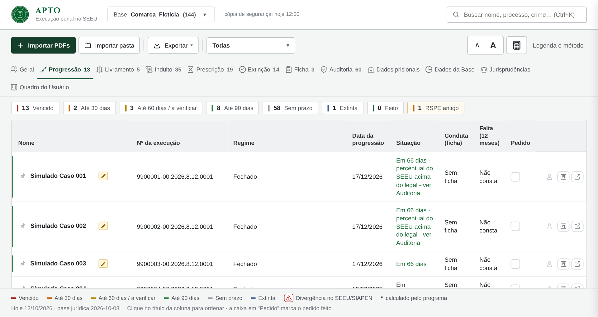
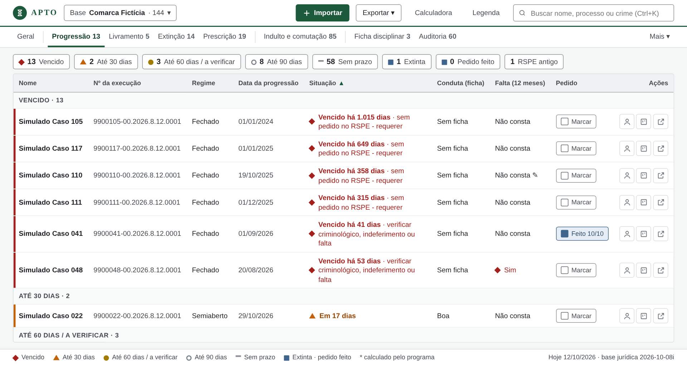
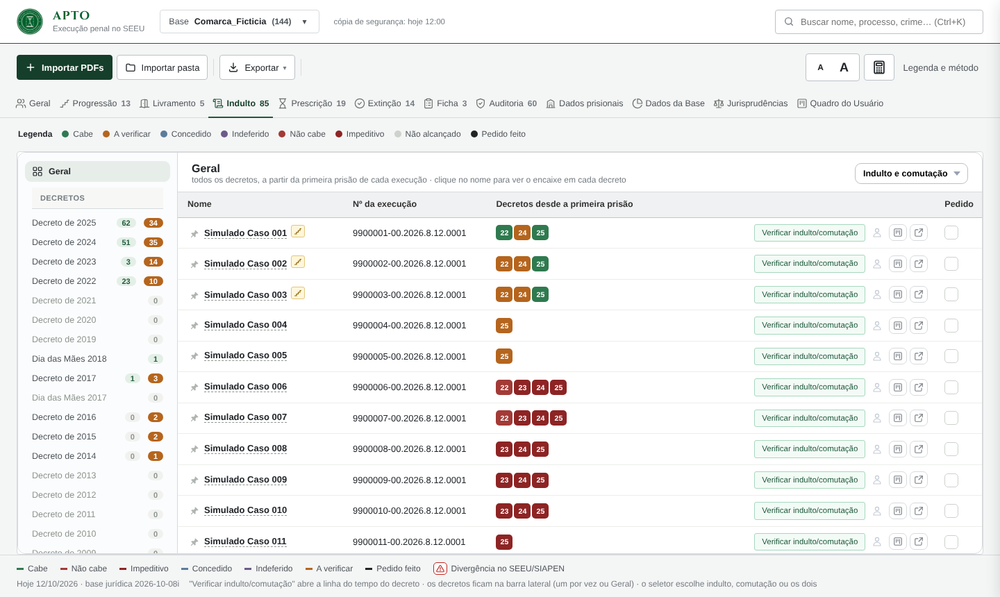
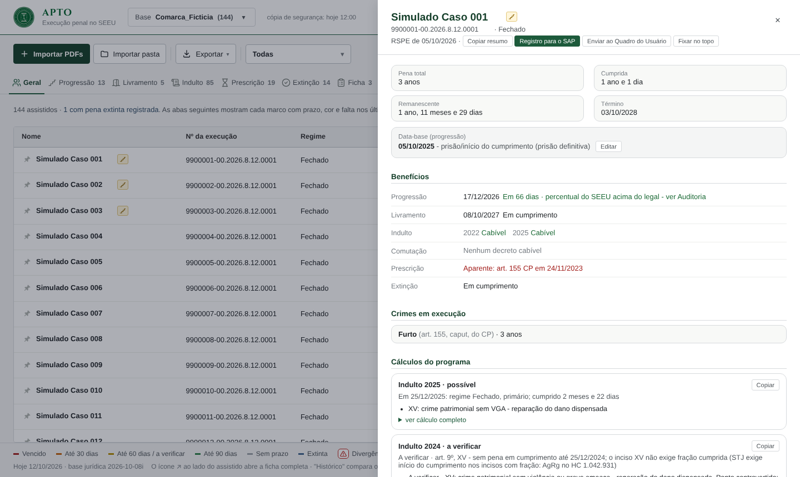
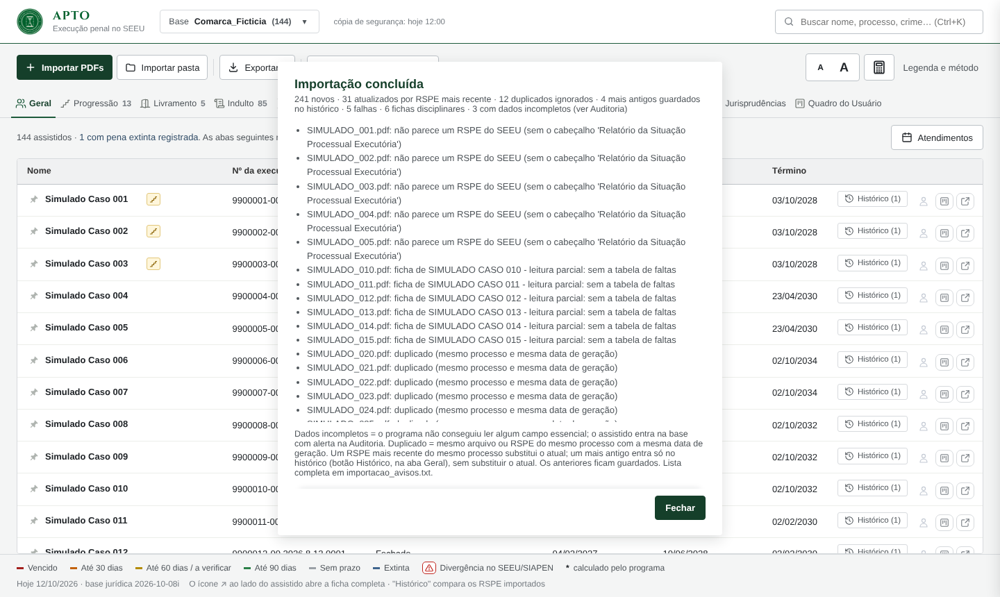

À esquerda, captura da versão 7.14.4 com a base fictícia (144 “Simulado Caso”). À direita, protótipo estático da proposta, com os mesmos dados, colunas e textos jurídicos: muda a ordem, a forma e a densidade, sem omitir informação. Abra cada protótipo em tamanho real pelo link.
Hoje a lista vem em ordem alfabética: os 13 vencidos ficam espalhados entre os 144. A coluna Situação é estreita e quebra em 4 linhas, enquanto Nome e Nº sobram. A cor é um filete de 3 px. Na proposta, a lista abre agrupada por urgência, com forma + cor + texto, e o pedido vira um botão com rótulo.

Com 150%, a área útil cai para cerca de 1280×680 px. Hoje cabem 2,5 linhas da tabela: cabeçalho, barras e rodapé ocupam 47% da altura e as linhas altas fazem o resto. Na proposta cabem cerca de 7.


Hoje o selo (“22”, “24”, “25”) só diz o resultado pela cor. “Não cabe” e “Impeditivo” são dois vermelhos quase iguais (ΔE 8), e o branco sobre o laranja tem 4,3:1. Na proposta, cada selo traz um símbolo (✓ ? ✕ ⊘ ★ –), a legenda vira filtro e o botão repetido em cada linha fica mais leve.

Hoje a linha “Indulto” mostra só os decretos cabíveis. O “a verificar” de 2024 e a sua fundamentação estão em “Cálculos do programa”, abaixo da dobra. Na proposta, o motivo aparece junto da linha, em passos numerados, com “Copiar fundamentação” ao lado. Os textos no protótipo seguem os do programa; o item 3 e o número de linhas são ilustrativos.

Hoje as falhas, as leituras parciais e os duplicados vêm misturados numa lista corrida, e o botão do registro em PDF aparece só às vezes. Na proposta, os totais vêm primeiro, separados pelo que exige ação, e cada grupo traz o próximo passo.
